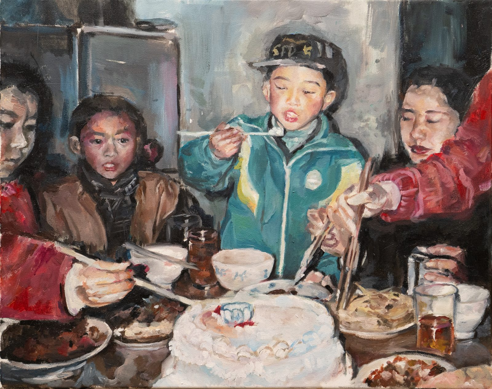

Narrative-driven work across mediums — on cultural diffusion, digital ephemera, and the fragmented formation of adolescent identity. Mostly in oil paint.
view the works ↓
I create narrative-driven work spanning across mediums, focusing on cultural diffusion, digital ephemera, and the fragmented formation of adolescent identity. Visually, I am drawn to the tension between organic and geometric forms, metaphorical objects as a storytelling element, and colorplay. Oil paint is my primary medium of choice, due to its alla-prima qualities, which suit the layering of spontaneity and intricacy.
do it all with care.
— the mottoTakeaways linger and affect our actions, even after conversations dissipate — just like smoke.
from yours, ephemerallywithout any external influence, who are you for the day?
from seconds splitBringing color back into photography.
from candles in candidcaught red-handed.
from the self-saboteurTradition and imagination, layered.
from freely, dear cowpokefor the ants of the world.
— a dedicationI'm Ame — an 18-year-old artist and programming enthusiast. If something here stayed with you, I'd love to hear about it.